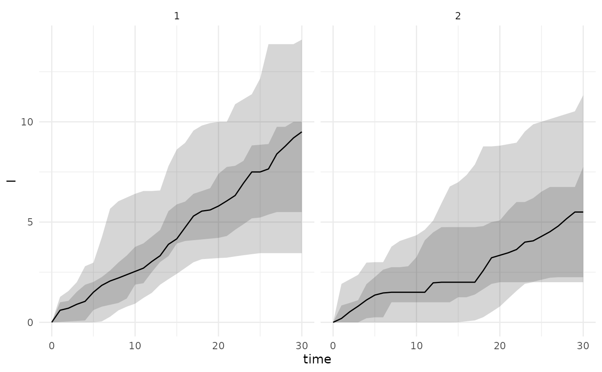

Project a Stochastic Model Forward in Time
Source:R/projection_stochastic_model.R
projection_stochastic_model.RdRuns forward projections from the posterior draws of a fitted
abc_stochastic_model for a fixed number of time steps (default 30),
using region-specific states and parameter sets. Each simulation is seeded
for reproducibility and run in parallel.
If state doesn't exist e.g. "I" but has states "I_{age}" then will sum over all states first before plotting
take the difference of column(s) that match on state state. This is
useful for any cumulative columns e.g. INC and C by converted them into
the incidence and case incidence respectively
For cumulative state variables such as cases (e.g., C_[0,1)), this function
resets their values to 0 at a specified reference time (default is 0). This is
useful when wanting to compute cumulative changes from a particular time point
in a simulation or projection.
Usage
projection_stochastic_model(asm, project_time = 30, seed = 123)
add_projection_date(psm, start_date)
# S3 method for class 'projection_stochastic_model'
plot(x, ...)
plot_projections(projection, state)
plot_projection_samples(psm, state)
plot_projections_by_age_group(projection, state)
create_projection_quantiles(
psm,
probs = c(0.025, 0.25, 0.5, 0.75, 0.975),
by_cols = c("time", "date")
)
projection_quantiles_by_age_group(
psm,
state,
probs = c(0.025, 0.25, 0.5, 0.75, 0.975)
)
projection_by_age_group(psm, state)
create_age_group_column(psm, state, index_cols = c("date", "time"))
collapse_states(psm)
difference_of_states(psm, state)
reset_state(psm, state, reset_time = 0)Arguments
- asm
An object of class
abc_stochastic_modelorscenario_stochastic_model.- project_time
Number of time steps to project forward. Defaults to
30.- seed
An integer used to seed the parallel simulations for reproducibility. Defaults to
123.- psm
An object of class
projection_stochastic_model, or a compatible data structure as accepted byget_projection_dataframe().- start_date
a date in yyyy-mm-dd format
- x
An object of class
projection_stochastic_model- ...
other arguments including
statestate to plot,"I"by default andtypeeither show individual trajectories "samples" or summarize "quantiles","quantiles"by default- projection
projection grouped using projection_quantiles_by_age_group
- state
A character string specifying the prefix of the cumulative state variable to reset (e.g.,
"C"to match columns like"C_[0,1)","C_[1,5)", etc.).- probs
vector of quantiles to plot
- by_cols
vector of columns to group by
- index_cols
columns to preserve defaults to
c("time","date")- reset_time
A numeric value indicating the time at which to reset the cumulative values back to zero. Defaults to 0.
Value
An object of class projection_stochastic_model, which is a list
with the following elements:
- model
The stochastic model used for simulation (of class
stochastic_model).- projection
A data frame with the projected simulations concatenated across posterior draws and days, including any parameter updates appended as columns.
An object of class projection_stochastic_model
A ggplot object.
A ggplot object.
A tibble() with columns by_cols, quantile, and quantile values per variable.
A tibble() with date, time, age_group, quantile, values.
tibble()
A tibble() in long format with age_group and the state column.
A tibble() with additional collapsed prefix columns
A tibble() with columns of differences per simulation trajectory
A tibble() with the same structure as the original projection data frame
Details
This function takes a fitted abc_stochastic_model, extracts the
posterior state and parameter sets, then runs simulations in parallel using
furrr. The model is updated with each posterior draw, run forward for a
fixed time frame, interpolated to daily resolution, and combined
into a single projection data frame.
Methods (by generic)
plot(projection_stochastic_model): Plot projections (quantiles or sample trajectories).
Functions
add_projection_date(): Add date to projection using astart_dateplot_projections(): Plot quantile bands (q2.5%, q25%, median, q75%, q97.5%) for a state.plot_projection_samples(): Plot individual sample trajectories, coloured by per-sample peak magnitude.plot_projections_by_age_group(): Faceted quantile plots by age group for a given state.create_projection_quantiles(): Compute per-time quantiles across simulations for all numeric columns.projection_quantiles_by_age_group(): Compute quantiles by age group for a state (e.g.,"C").projection_by_age_group(): Long-format projectiontibble()with anage_groupcolumn for a state prefix.create_age_group_column(): Create anage_groupcolumn by gathering state_AGE columns for a prefix state.collapse_states(): Sum age-stratified columns into their shared prefix (e.g.,C_[*]→C).difference_of_states(): Take first differences for all columns starting with a state prefix.reset_state(): Convert cumulative state variables back to zero at a reference time
Examples
reactions <- list(
infection_1 = list(
transition = c("I_1" = +1),
rate = function(x,p,t){p$beta}
),
infection_2 = list(
transition = c("I_2" = +1),
rate = function(x,p,t){0.5*p$beta}
)
)
example_scenario <- list(
params = list(beta = 0.1),
initial_states = list(I_1 = 0, I_2 = 0),
sim_args = list(T = 10)
)
sm <- stochastic_model(reactions,example_scenario)
parameters <- data.frame(beta = seq(0.1, 0.5, length.out = 10))
asm <- scenario_stochastic_model(sm, parameters = parameters)
psm <- projection_stochastic_model(asm)
projection <- psm |> projection_quantiles_by_age_group("I")
plot_projections_by_age_group(projection,"I")

reactions <- list(
infection = list(
transition = c("I" = +1),
rate = function(x,p,t){p$beta}
)
)
example_scenario <- list(
params = list(beta = 0.1),
initial_states = list(I = 0),
sim_args = list(T = 10)
)
sm <- stochastic_model(reactions,example_scenario)
parameters <- data.frame(beta = seq(0.1, 0.5, length.out = 10))
asm <- scenario_stochastic_model(sm, parameters = parameters)
psm <- projection_stochastic_model(asm)
# Reset cumulative cases to 0 at time 5
reset_state(psm, state = "C", reset_time = 5)
#> # A tibble: 310 × 4
#> time I beta sim_id
#> <int> <dbl> <dbl> <int>
#> 1 0 0 0.1 1
#> 2 1 0.0614 0.1 1
#> 3 2 0.123 0.1 1
#> 4 3 0.184 0.1 1
#> 5 4 0.246 0.1 1
#> 6 5 0.307 0.1 1
#> 7 6 0.369 0.1 1
#> 8 7 0.430 0.1 1
#> 9 8 0.491 0.1 1
#> 10 9 0.553 0.1 1
#> # ℹ 300 more rows